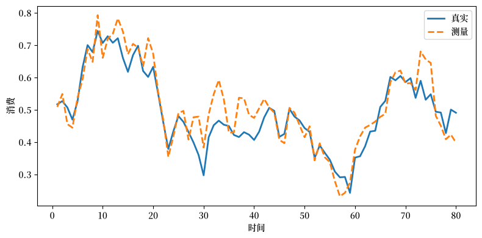
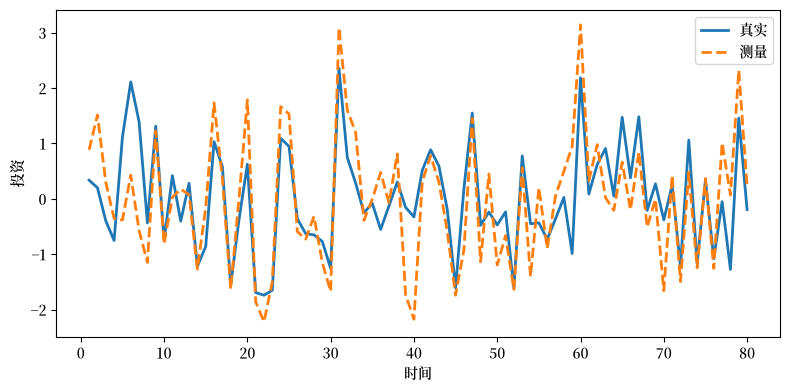
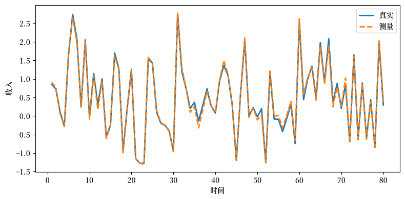
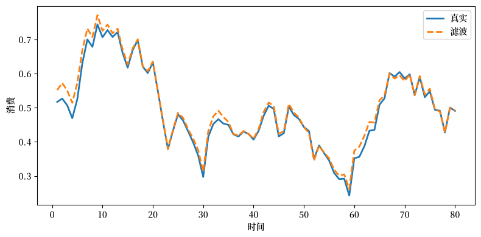
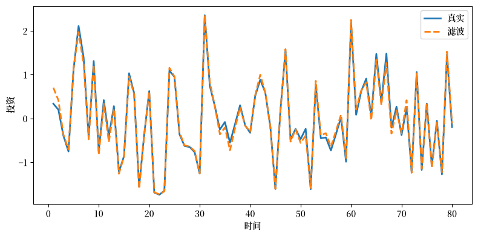
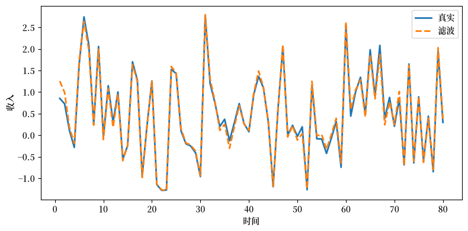
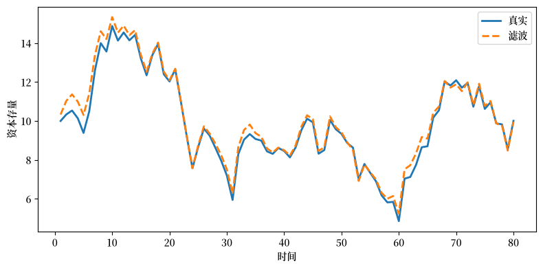
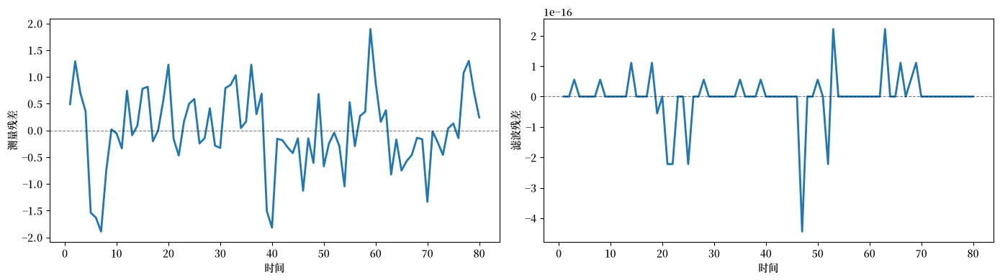

52. 两种测量模型与投资加速数#
52.1. 概述#
“理性预期计量经济学”旨在用对经济学家有意义的对象来解释经济时间序列，即描述偏好、技术、信息集、禀赋和均衡概念的参数。
当完全推导出来后，理性预期模型通常给出从这些具有经济可解释性的参数到模型所决定的时间序列各阶矩的一个明确定义的映射。
如果能够获得这些时间序列的准确观测数据，就可以利用这个映射实现基于似然函数或矩方法的参数估计方法。
备注
这就是为什么计量经济学估计常被称为”逆”问题，而对给定参数值模拟一个模型被称为”正”问题。正问题指的是我们刚刚描述的映射，而逆问题则涉及以某种方式将该映射的”逆”应用于一个数据集，这个数据集被视为来自该映射所描述的联合概率分布的一次抽样。
然而，如果所关心的变量只存在含误差的数据，那么提取参数估计就需要更多步骤。
实际上，我们需要一个数据报告机构的模型，这个模型要足够可操作，以便我们能够确定由动态经济模型和测量过程共同诱导出的、通往测量数据概率律的映射。
为数据收集机构选择的模型是计量经济学设定的一个方面，它可能对关于经济结构的推断产生重大影响。
Sargent [1989] 描述了在一个 永久收入 经济中的两种备选数据生成模型，其中投资加速数——即这两个 quantecon 讲座 萨缪尔森乘数-加速器模型 和 加速原理与商业周期的本质 所研究的机制——塑造了商业周期波动。
在模型1中，数据收集机构只是报告它所收集的含误差数据。
在模型2中，数据收集机构首先收集满足经典的变量含误差模型的含误差数据，然后对数据进行滤波，并报告滤波后的对象。
尽管这两个模型具有相同的”深层参数”，但它们对数据产生了截然不同的约束集。
在本讲座中，我们遵循 Sargent [1989] 并研究这些不同的测量方案如何影响实证含义。
我们首先导入本讲座中将用于生成 LaTeX 输出的库和辅助函数
import numpy as np
import pandas as pd
import matplotlib.pyplot as plt
from scipy import linalg
from IPython.display import Latex
import matplotlib as mpl # i18n
FONTPATH = "fonts/SourceHanSerifSC-SemiBold.otf" # i18n
mpl.font_manager.fontManager.addfont(FONTPATH) # i18n
mpl.rcParams['font.family'] = ['Source Han Serif SC'] # i18n
np.set_printoptions(precision=3, suppress=True)
def df_to_latex_matrix(df, label=''):
"""Convert DataFrame to LaTeX matrix."""
lines = [r'\begin{bmatrix}']
for idx, row in df.iterrows():
row_str = ' & '.join(
[f'{v:.4f}' if isinstance(v, (int, float))
else str(v) for v in row]) + r' \\'
lines.append(row_str)
lines.append(r'\end{bmatrix}')
if label:
return '$' + label + ' = ' + '\n'.join(lines) + '$'
else:
return '$' + '\n'.join(lines) + '$'
def df_to_latex_array(df):
"""Convert DataFrame to LaTeX array."""
n_rows, n_cols = df.shape
# 构建列格式（居中列）
col_format = 'c' * (n_cols + 1) # +1 用于索引
# 开始数组
lines = [r'\begin{array}{' + col_format + '}']
# 表头行
header = ' & '.join([''] + [str(c) for c in df.columns]) + r' \\'
lines.append(header)
lines.append(r'\hline')
# 数据行
for idx, row in df.iterrows():
row_str = str(idx) + ' & ' + ' & '.join(
[f'{v:.3f}' if isinstance(v, (int, float)) else str(v)
for v in row]) + r' \\'
lines.append(row_str)
lines.append(r'\end{array}')
return '$' + '\n'.join(lines) + '$'
52.2. 经济模型#
数据由一个线性二次型版本的随机最优增长模型生成，该模型是本 quantecon 讲座 永久收入模型 中所描述模型的一个实例。
社会计划者选择 \(\{c_t, k_{t+1}\}_{t=0}^\infty\) 的一个随机过程以最大化
受技术所施加的约束限制
这里 \(c_t\) 是消费，\(k_t\) 是资本存量，\(f\) 是资本的总回报率，\(\theta_t\) 是遵循下式的禀赋或技术冲击
其中 \(L\) 是后移（或”滞后”）算子，\(a(z) = 1 - a_1 z - a_2 z^2 - \cdots - a_r z^r\) 的所有零点都在单位圆之外。
52.2.1. 最优决策规则#
\(c_t\) 的最优决策规则是
其中 \(\alpha = u_1[1-(\beta f)^{-1}]/u_2\)。
52.2.2. 净收入与加速数#
将净产出或国民收入定义为
注意 (52.2) 和 (52.5) 蕴含 \((k_{t+1} - k_t) + c_t = y_{nt}\)。
为了同时得到 Friedman [1956] 的几何分布滞后消费函数和一个分布滞后加速数，我们施加两个假设：
\(a(L) = 1\)，使得 \(\theta_t\) 是白噪声。
\(\beta f = 1\)，使得资本回报率等于时间偏好率。
假设1对于加速数的严格形式至关重要。
放松它以允许序列相关的 \(\theta_t\) 会在广义意义上保留一个加速数，但会丧失 (52.8) 的精确几何滞后形式。
加入第二个冲击会完全打破单指数结构，即使没有测量误差也能产生非平凡的格兰杰因果关系。
假设2不那么重要，只影响各种常数。
在这两个假设下，(52.4) 简化为
当 (52.6)、(52.5) 和 (52.2) 结合起来时，最优计划满足
方程 (52.7) 是弗里德曼的消费模型：消费是收入的几何分布滞后，其衰减系数 \(\beta\) 等于贴现因子。
方程 (52.8) 是分布滞后加速数：投资是收入一阶差分的几何分布滞后。
这与 Chow [1968] 实证记录的机制相同（见 加速原理与商业周期的本质）。
方程 (52.9) 表明，可支配收入的一阶差分是一个一阶移动平均过程，其新息等于禀赋冲击 \(\theta_t\) 的新息。
正如 Muth [1960] 所展示的，这样的过程可以通过几何分布滞后或”适应性预期”方案最优地预测。
52.2.3. 加速数之谜#
当所有变量都被准确测量并由单一冲击 \(\theta_t\) 驱动时，\((c_t,\, k_{t+1}-k_t,\, y_{nt})\) 的谱密度矩阵在所有频率上的秩为1。
每个变量都是同一白噪声的一个可逆单边分布滞后，因此没有任何变量格兰杰引起任何其他变量。
然而，从实证上看，产出的度量格兰杰引起投资，但反之不然。
Sargent [1989] 表明测量误差可以解决这个谜题。
为说明这一点，首先假设产出 \(y_{nt}\) 被完美测量，而消费和资本分别被与 \(\theta_t\) 正交的序列相关测量误差 \(v_{ct}\) 和 \(v_{kt}\) 污染。
设 \(\bar c_t\) 和 \(\bar k_{t+1} - \bar k_t\) 表示测量到的序列。那么
在这种情况下，收入格兰杰引起消费和投资，但不被它们格兰杰引起。
当每个测量到的序列都被测量误差污染时，每个测量变量通常都会格兰杰引起每个其他变量。
这种格兰杰因果关系的强度，如通过 \(j\) 步向前预测误差方差的分解来度量，取决于测量误差的相对方差。
在这种情况下，每个观测到的序列都将共同信号 \(\theta_t\) 与特异性测量噪声混合在一起。
测量误差方差较低的序列更紧密地跟踪 \(\theta_t\)，因此它的新息包含更多关于其他序列未来值的信息。
因此，在预测误差方差分解中，对测量较好的序列的冲击在其他变量的 \(j\) 步向前预测误差中占更大份额。
在像这样的单一共同指数模型中（\(\theta_t\) 是共同指数），测量较好的变量比测量较差的序列扩展出更多的格兰杰因果关系，反之则不然。
这种不对称性驱动了我们很快将观察到的数值结果。
52.2.4. 状态空间表述#
让我们将经济模型和测量过程映射到一个线性状态空间框架。
设 \(f = 1.05\) 且 \(\theta_t \sim \mathcal{N}(0, 1)\)。
定义状态向量和观测向量
使得无误差数据由状态空间系统描述
其中 \(\varepsilon_t = \begin{bmatrix} 0 \\ \theta_t \end{bmatrix}\) 具有协方差 \(E \varepsilon_t \varepsilon_t^\top = Q\)，而各矩阵为
\(Q\) 是奇异的，因为只有一个随机性来源 \(\theta_t\)；给定 \(\theta_t\)，资本存量 \(k_t\) 确定性地演化。
# 真实经济的基线结构矩阵
f = 1.05
β = 1 / f
A = np.array([
[1.0, 1.0 / f],
[0.0, 0.0]
])
C = np.array([
[f - 1.0, 1.0],
[f - 1.0, 1.0 - 1.0 / f],
[0.0, 1.0 / f]
])
Q = np.array([
[0.0, 0.0],
[0.0, 1.0]
])
52.2.5. 真实脉冲响应#
在引入测量误差之前，我们计算无误差变量对单位冲击 \(\theta_0 = 1\) 的脉冲响应。
这个基准阐明了当我们稍后从无误差变量切换到统计机构报告的变量时会发生什么变化。
响应清楚地展示了投资加速数：对净收入 \(y_n\) 的全部影响发生在滞后0处，而消费仅调整 \(1 - f^{-1} \approx 0.048\)，投资吸收余下部分。
从滞后1开始，经济处于新的稳态
def table2_irf(A, C, n_lags=6):
x = np.array([0.0, 1.0]) # k_0 = 0, theta_0 = 1
rows = []
for j in range(n_lags):
y_n, c, d_k = C @ x
rows.append([y_n, c, d_k])
x = A @ x
return pd.DataFrame(rows, columns=[r'y_n', r'c', r'\Delta k'],
index=pd.Index(range(n_lags), name='lag'))
table2 = table2_irf(A, C, n_lags=6)
display(Latex(df_to_latex_array(table2)))
52.3. 测量误差#
让我们添加生成报告数据的测量层。
计量经济学家不直接观测 \(z_t\)，而是看到 \(\bar z_t = z_t + v_t\)，其中 \(v_t\) 是一个测量误差向量。
测量误差遵循一个 AR(1) 过程
其中 \(\eta_t\) 是一个向量白噪声，满足 \(E \eta_t \eta_t^\top = \Sigma_\eta\) 且对所有 \(t, s\) 有 \(E \varepsilon_t v_s^\top = 0\)。
参数为
因此 \(v_t\) 的无条件协方差为
新息方差对消费最小（\(\sigma_\eta = 0.035\)），其次是收入（\(\sigma_\eta = 0.05\)），投资最大（\(\sigma_\eta = 0.65\)）。
正如 Sargent [1989] 以及我们上面的讨论，对于格兰杰因果关系不对称性而言重要的是整个系统中的总体测量质量：产出测量相对较好，而投资测量相对较差。
ρ = np.array([0.6, 0.7, 0.3])
D = np.diag(ρ)
# η_t 的新息标准差
σ_η = np.array([0.05, 0.035, 0.65])
Σ_η = np.diag(σ_η**2)
# 测量误差 v_t 的无条件协方差
R = np.diag((σ_η / np.sqrt(1.0 - ρ**2))**2)
print(f"f = {f}, β = 1/f = {β:.6f}")
print()
display(Latex(df_to_latex_matrix(pd.DataFrame(A), 'A')))
display(Latex(df_to_latex_matrix(pd.DataFrame(C), 'C')))
display(Latex(df_to_latex_matrix(pd.DataFrame(D), 'D')))
f = 1.05, β = 1/f = 0.952381
我们将分别分析这两种报告方案，但首先我们需要一个求解稳态卡尔曼增益和误差协方差的求解器。
下面的函数在里卡蒂方程上迭代直到收敛，返回卡尔曼增益 \(K\)、状态协方差 \(S\) 和新息协方差 \(V\)
def steady_state_kalman(A, C_obs, Q, R, W=None, tol=1e-13, max_iter=200_000):
"""
Solve steady-state Kalman equations for
x_{t+1} = A x_t + w_{t+1}
y_t = C_obs x_t + v_t
with cov(w)=Q, cov(v)=R, cov(w,v)=W.
"""
n = A.shape[0]
m = C_obs.shape[0]
if W is None:
W = np.zeros((n, m))
S = Q.copy()
for _ in range(max_iter):
V = C_obs @ S @ C_obs.T + R
K = (A @ S @ C_obs.T + W) @ np.linalg.inv(V)
S_new = Q + A @ S @ A.T - K @ V @ K.T
if np.max(np.abs(S_new - S)) < tol:
S = S_new
break
S = S_new
V = C_obs @ S @ C_obs.T + R
K = (A @ S @ C_obs.T + W) @ np.linalg.inv(V)
return K, S, V
有了所需的结构矩阵和工具，我们现在依次遵循 Sargent [1989] 的两种报告方案。
52.4. 一个由机构最初收集的经典测量模型#
数据收集机构观测到 \(z_t\) 的一个含噪声版本，即
我们称之为模型1：机构收集含噪声数据并在不滤波的情况下报告它们。
为了表示 \(\bar z_t\) 过程的二阶矩，方便的做法是得到它的总体向量自回归。
向量自回归中的误差向量是 \(\bar z_t\) 的新息，可以取为 Wold 移动平均表示中的白噪声，它可以通过”求逆”自回归表示得到。
总体向量自回归及其如何依赖于状态空间系统和测量误差过程的参数，为如何解释 \(\bar z_t\) 的估计向量自回归提供了洞见。
构造向量自回归作为将 \(\bar z_t\) 样本的似然作为自由参数 \(\{A, C, D, Q, R\}\) 的函数进行计算的中间步骤也是有用的。
用于构造向量自回归表示的特定方法也被证明在构造最优报告机构模型时作为中间步骤是有用的。
我们使用递归（卡尔曼滤波）方法来获得 \(\bar z_t\) 的向量自回归。
52.4.1. 拟差分#
因为测量误差 \(v_t\) 是序列相关的，具有白噪声测量误差的标准卡尔曼滤波器不能直接应用于 \(\bar z_t = C x_t + v_t\)。
一个替代方法是用测量误差 AR 分量来增广状态向量（见 Sargent [1989] 的附录 B）。
这里我们采取 Sargent [1989] 中描述的拟差分路线，它将系统简化为一个具有序列不相关观测噪声的系统。
定义
那么状态空间系统 (52.13)、测量误差过程 (52.14) 和观测方程 (52.15) 蕴含状态空间系统
其中 \((\varepsilon_t, \bar\nu_t)\) 是一个白噪声过程，满足
具有协方差 (52.18) 的系统 (52.17) 由五个矩阵 \([A, \bar C, Q, R_1, W_1]\) 刻画。
52.4.2. 新息表示#
与 (52.17) 和 (52.18) 相关联的是 \(\tilde z_t\) 的新息表示，
其中
\([K_1, S_1]\) 由应用于 \([A, \bar C, Q, R_1, W_1]\) 的稳态卡尔曼滤波器计算，且
由 (52.20)，\(u_t\) 是 \(\bar z_t\) 过程的新息过程。
52.4.3. Wold 表示#
系统 (52.19) 和定义 (52.16) 可用于得到 \(\bar z_t\) 过程的 Wold 向量移动平均表示：
其中 \(L\) 是滞后算子。
下面我们数值计算 \(K_1\)、\(S_1\) 和 \(V_1\)
C_bar = C @ A - D @ C
R1 = C @ Q @ C.T + R
W1 = Q @ C.T
K1, S1, V1 = steady_state_kalman(A, C_bar, Q, R1, W1)
52.4.4. 计算 Wold 移动平均表示中的系数#
为了数值计算 (52.22) 中的移动平均系数，定义增广状态
具有动态
其中
移动平均系数则为 \(\psi_0 = I\) 和 \(\psi_j = H_1 F_1^{j-1} G_1\)（对 \(j \geq 1\)）。
F1 = np.block([
[A, np.zeros((2, 3))],
[C_bar, D]
])
G1 = np.vstack([K1, np.eye(3)])
H1 = np.hstack([C_bar, D])
def measured_wold_coeffs(F, G, H, n_terms=25):
psi = [np.eye(3)]
Fpow = np.eye(F.shape[0])
for _ in range(1, n_terms):
psi.append(H @ Fpow @ G)
Fpow = Fpow @ F
return psi
def fev_contributions(psi, V, n_horizons=20):
"""
Returns contrib[var, shock, h-1] = contribution at horizon h.
"""
P = linalg.cholesky(V, lower=True)
out = np.zeros((3, 3, n_horizons))
for h in range(1, n_horizons + 1):
acc = np.zeros((3, 3))
for j in range(h):
T = psi[j] @ P
acc += T**2
out[:, :, h - 1] = acc
return out
psi1 = measured_wold_coeffs(F1, G1, H1, n_terms=40)
resp1 = np.array(
[psi1[j] @ linalg.cholesky(V1, lower=True) for j in range(14)])
decomp1 = fev_contributions(psi1, V1, n_horizons=20)
52.4.5. 高斯似然#
样本 \(\{\bar z_t,\, t=0,\ldots,T\}\) 的高斯对数似然函数，在给定初始状态估计 \(\hat x_0\) 的条件下，可表示为
其中 \(u_t\) 是由下面 (52.25) 定义的 \(\{\bar z_t\}\) 的函数。
为了使用 (52.19) 计算 \(\{u_t\}\)，有用的做法是将其表示为
其中 \(\tilde z_t = \bar z_{t+1} - D\bar z_t\) 是拟差分后的观测。
给定 \(\hat x_0\)，方程 (52.25) 可以递归地用于计算一个 \(\{u_t\}\) 过程。
52.4.6. 预测误差方差分解#
为了度量每个新息的相对重要性，我们分解每个测量变量的 \(j\) 步向前预测误差方差。
写 \(\bar z_{t+j} - E_t \bar z_{t+j} = \sum_{i=0}^{j-1} \psi_i u_{t+j-i}\)。
设 \(P\) 是 \(V_1\) 的下三角 Cholesky 因子，使得正交化的新息为 \(e_t = P^{-1} u_t\)。
那么正交化新息 \(k\) 对变量 \(m\) 的 \(j\) 步向前方差的贡献为 \(\sum_{i=0}^{j-1} (\psi_i P)_{mk}^2\)。
下表显示了在视界1到20下每个正交化新息对 \(y_n\)、\(c\) 和 \(\Delta k\) 预测误差方差的累积贡献。
每个面板固定一个正交化新息并报告其对每个变量预测误差方差的累积贡献。
行是预测视界，列是被预测的变量。
horizons = np.arange(1, 21)
labels = [r'y_n', r'c', r'\Delta k']
def fev_table(decomp, shock_idx, horizons):
return pd.DataFrame(
np.round(decomp[:, shock_idx, :].T, 4),
columns=labels,
index=pd.Index(horizons, name='j')
)
shock_titles = [r'\text{A. Innovation in } y_n',
r'\text{B. Innovation in } c',
r'\text{C. Innovation in } \Delta k']
parts = []
for i, title in enumerate(shock_titles):
arr = df_to_latex_array(fev_table(decomp1, i, horizons)).strip('$')
parts.append(
r'\begin{array}{c} ' + title + r' \\ ' + arr + r' \end{array}')
display(Latex('$' + r' \quad '.join(parts) + '$'))
收入新息在所有三个变量中占预测误差方差的相当大比例，而消费和投资新息主要贡献于它们自身的方差。
这是一个格兰杰因果关系模式：收入似乎格兰杰引起消费和投资，但反之不然。
这与论文的信息相符，即在单一共同指数模型中，测量相对最好的序列具有最强的预测能力。
让我们看看新息的协方差矩阵
print('Covariance matrix of innovations:')
df_v1 = pd.DataFrame(np.round(V1, 4), index=labels, columns=labels)
display(Latex(df_to_latex_matrix(df_v1)))
Covariance matrix of innovations:
新息的协方差矩阵不是对角的，但如下所示，其特征值分离得很好
print('Eigenvalues of covariance matrix:')
print(np.sort(np.linalg.eigvalsh(V1))[::-1].round(4))
Eigenvalues of covariance matrix:
[2.161 0.218 0.002]
第一个特征值远大于其他特征值，这与存在一个占主导地位的共同冲击 \(\theta_t\) 相一致
52.4.7. Wold 脉冲响应#
Wold 表示中的脉冲响应使用正交化新息报告（\(V_1\) 的 Cholesky 分解，排序为 \(y_n\)、\(c\)、\(\Delta k\)）。
在此方法下，滞后0的响应反映了同期协方差和 Cholesky 排序两者。
我们首先定义一个辅助函数来将响应系数格式化为 LaTeX 数组
lags = np.arange(14)
def wold_response_table(resp, shock_idx, lags):
return pd.DataFrame(
np.round(resp[:, :, shock_idx], 4),
columns=labels,
index=pd.Index(lags, name='j')
)
现在我们在一个具有三个面板的单一表格中报告对每个正交化新息的脉冲响应
wold_titles = [r'\text{A. Response to } y_n \text{ innovation}',
r'\text{B. Response to } c \text{ innovation}',
r'\text{C. Response to } \Delta k \text{ innovation}']
parts = []
for i, title in enumerate(wold_titles):
arr = df_to_latex_array(wold_response_table(resp1, i, lags)).strip('$')
parts.append(
r'\begin{array}{c} ' + title + r' \\ ' + arr + r' \end{array}')
display(Latex('$' + r' \quad '.join(parts) + '$'))
在冲击时刻，第一个正交化新息载荷于所有三个测量变量。
在后续滞后处，收入新息在所有三个变量中产生持续的响应，因为作为测量最好的序列，它的新息由真实的永久冲击 \(\theta_t\) 主导。
消费和投资新息产生的响应根据它们各自测量误差的 AR(1) 结构衰减（\(\rho_c = 0.7\)，\(\rho_{\Delta k} = 0.3\)），对其他变量几乎没有溢出。
52.5. 一个由机构报告最优估计的模型#
假设数据收集机构不是报告含误差数据 \(\bar z_t\)，而是报告真实数据在含误差数据历史上的线性最小二乘投影。
这个模型提供了一种解释数据报告过程两个特征的可能方式。
季节调整：如果 \(v_t\) 的各分量有强季节性，最优滤波器将呈现一种可以部分地用季节调整滤波器来解释的形状，这种滤波器对当前和过去的 \(\bar z_t\) 是单边的。
数据修正：如果 \(z_t\) 包含某个感兴趣变量的当前值和滞后值，那么该模型会同时确定”初步”、”修订”和”最终”估计，作为基于逐渐延长的含误差观测历史的连续条件期望。
为了使其可操作，我们赋予报告机构一个生成真实数据和测量误差的联合过程的模型。
我们假设报告机构具有”理性预期”：它知道导致 (52.17)–(52.18) 的经济和测量结构。
为了准备其估计，报告机构自己计算卡尔曼滤波器以获得新息表示 (52.19)。
报告机构不报告含误差数据 \(\bar z_t\)，而是报告 \(\tilde z_t = G \hat x_t\)，其中 \(G\) 是一个”选择矩阵”，对于机构所报告的数据可能等于 \(C\)。
数据 \(G \hat x_t = E[G x_t \mid \bar z_t, \bar z_{t-1}, \ldots, \hat x_0]\)。
报告数据的状态空间表示则为
其中 (52.26) 的第一行来自新息表示 (52.19)。
注意 \(u_t\) 是 \(\bar z_{t+1}\) 的新息，而不是 \(\tilde z_t\) 的新息。
为了得到 \(\tilde z_t\) 的 Wold 表示以及 \(\tilde z_t\) 样本的似然函数，我们需要为 (52.26) 得到一个新息表示。
52.5.1. 滤波数据的新息表示#
为了给 (52.26) 增加一点一般性，我们将其修改为系统
其中 \(\eta_t\) 是一个第二类白噪声测量误差过程（“打字错误”），假定其协方差矩阵 \(R_2\) 非常小。
联合噪声的协方差矩阵为
其中 \(Q_2 = K_1 V_1 K_1^\top\)。
如果 \(R_2\) 是奇异的，就有必要通过使用诱导”降阶观测器”的变换来调整卡尔曼滤波公式。
在实践中，我们用矩阵 \(\epsilon I\)（其中 \(\epsilon > 0\) 很小）来近似一个零 \(R_2\) 矩阵，以保持卡尔曼滤波器数值上良态。
对于系统 (52.27) 和 (52.28)，一个新息表示为
其中
因此 \(\{a_t\}\) 是报告数据 \(\tilde z_t\) 的新息过程，其新息协方差为
52.5.2. Wold 表示#
由 (52.29) 得到 \(\tilde z_t\) 的 Wold 移动平均表示为
系数为 \(\psi_0 = I\) 和 \(\psi_j = G A^{j-1} K_2\)（对 \(j \geq 1\)）。
注意这比模型1的 Wold 表示 (52.22) 更简单，因为不需要撤销拟差分。
52.5.3. 高斯似然#
当使用类似于模型1的方法时，可以通过首先利用下式从 \(\tilde z_t\) 的观测中计算一个 \(\{a_t\}\) 序列来计算 \(\tilde z_t\) 的高斯对数似然
\(T\) 个观测样本 \(\{\tilde z_t\}\) 的似然函数则为
注意相对于为含误差数据计算似然函数 (52.24)，为最优滤波数据计算似然函数需要更多计算。
两个似然函数都要求计算卡尔曼滤波器 (52.20)，而滤波数据的似然函数要求还要计算卡尔曼滤波器 (52.30)。
实际上，为了解释和使用机构报告的滤波数据，有必要重新追溯机构用来合成这些数据的步骤。
卡尔曼滤波器 (52.20) 应该由机构构建。
机构不需要使用卡尔曼滤波器 (52.30)，因为它不需要滤波数据的 Wold 表示。
在我们的参数化中 \(G = C\)。
Q2 = K1 @ V1 @ K1.T
ε = 1e-6
K2, S2, V2 = steady_state_kalman(A, C, Q2, ε * np.eye(3))
def filtered_wold_coeffs(A, C, K, n_terms=25):
psi = [np.eye(3)]
Apow = np.eye(2)
for _ in range(1, n_terms):
psi.append(C @ Apow @ K)
Apow = Apow @ A
return psi
psi2 = filtered_wold_coeffs(A, C, K2, n_terms=40)
resp2 = np.array(
[psi2[j] @ linalg.cholesky(V2, lower=True) for j in range(14)])
decomp2 = fev_contributions(psi2, V2, n_horizons=20)
52.5.4. 预测误差方差分解#
因为滤波数据几乎无噪声，新息协方差 \(V_2\) 接近奇异，具有一个占主导地位的特征值。
这意味着滤波经济基本上由一个冲击驱动，就像真实经济一样
parts = []
for i, title in enumerate(shock_titles):
arr = df_to_latex_array(fev_table(decomp2, i, horizons)).strip('$')
parts.append(
r'\begin{array}{c} ' + title + r' \\ ' + arr + r' \end{array}')
display(Latex('$' + r' \quad '.join(parts) + '$'))
在模型2中，第一个新息几乎占据所有预测误差方差，就像在真实经济中单个结构冲击 \(\theta_t\) 驱动一切一样。
第二和第三个新息贡献可忽略不计。
这证实了滤波剥离了在模型1中制造多个独立变异来源假象的测量噪声。
模型2新息的协方差矩阵和特征值为
print('Covariance matrix of innovations:')
df_v2 = pd.DataFrame(np.round(V2, 4), index=labels, columns=labels)
display(Latex(df_to_latex_matrix(df_v2)))
Covariance matrix of innovations:
print('Eigenvalues of covariance matrix:')
print(np.sort(np.linalg.eigvalsh(V2))[::-1].round(4))
Eigenvalues of covariance matrix:
[1.899 0. 0. ]
正如 Sargent [1989] 所强调的，尽管两个测量模型共享相同的底层参数，它们却对经济动态产生了截然不同的推断。
52.5.5. Wold 脉冲响应#
我们再次使用正交化 Wold 表示脉冲响应，采用 \(V_2\) 的 Cholesky 分解，排序为 \(y_n\)、\(c\)、\(\Delta k\)。
parts = []
for i, title in enumerate(wold_titles):
arr = df_to_latex_array(
wold_response_table(resp2, i, lags)).strip('$')
parts.append(
r'\begin{array}{c} ' + title + r' \\ ' + arr + r' \end{array}')
display(Latex('$' + r' \quad '.join(parts) + '$'))
模型2中的收入新息产生的响应紧密逼近来自结构冲击 \(\theta_t\) 的真实脉冲响应函数。
读者可以将左表与上面 真实脉冲响应 部分中的表格进行比较。
数字本质上相同。
消费和投资新息产生的响应小几个数量级，证实滤波数据基本上由一个冲击驱动。
与模型1不同，模型2的滤波数据无法重现加速数文献实证记录的表观格兰杰因果关系模式。
因此，在总体层面上，尽管两个测量模型共享相同的结构经济，它们却蕴含不同的实证故事。
在模型1（原始数据）中，测量噪声制造出多个新息和一个表观格兰杰因果关系模式。
在模型2（滤波数据）中，新息坍缩回本质上一个占主导地位的冲击，反映了真实的单指数经济。
让我们在一个有限样本模拟中验证这些含义。
52.6. 模拟#
上面的表格刻画了两个模型的总体矩。
让我们模拟80期的真实、测量和滤波数据，以将总体含义与有限样本行为进行比较。
首先，我们定义一个函数来模拟真实经济，生成带有 AR(1) 测量误差的测量数据，并应用模型1卡尔曼滤波器以产生滤波估计
def simulate_series(seed=7909, T=80, k0=10.0):
"""
Simulate true, measured, and filtered series.
"""
rng = np.random.default_rng(seed)
# 真实状态/可观测量
θ = rng.normal(0.0, 1.0, size=T)
k = np.empty(T + 1)
k[0] = k0
y = np.empty(T)
c = np.empty(T)
dk = np.empty(T)
for t in range(T):
x_t = np.array([k[t], θ[t]])
y[t], c[t], dk[t] = C @ x_t
k[t + 1] = k[t] + (1.0 / f) * θ[t]
# 带有 AR(1) 误差的测量数据
v_prev = np.zeros(3)
v = np.empty((T, 3))
for t in range(T):
η_t = rng.multivariate_normal(np.zeros(3), Σ_η)
v_prev = D @ v_prev + η_t
v[t] = v_prev
z_meas = np.column_stack([y, c, dk]) + v
# 通过模型1变换滤波器的滤波数据
xhat_prev = np.array([k0, 0.0])
z_prev = np.zeros(3)
z_filt = np.empty((T, 3))
k_filt = np.empty(T)
for t in range(T):
z_bar_t = z_meas[t] - D @ z_prev
u_t = z_bar_t - C_bar @ xhat_prev
xhat_t = A @ xhat_prev + K1 @ u_t
z_filt[t] = C @ xhat_t
k_filt[t] = xhat_t[0]
xhat_prev = xhat_t
z_prev = z_meas[t]
out = {
"y_true": y, "c_true": c, "dk_true": dk, "k_true": k[:-1],
"y_meas": z_meas[:, 0], "c_meas": z_meas[:, 1],
"dk_meas": z_meas[:, 2],
"y_filt": z_filt[:, 0], "c_filt": z_filt[:, 1],
"dk_filt": z_filt[:, 2], "k_filt": k_filt
}
return out
sim = simulate_series(seed=7909, T=80, k0=10.0)
我们使用以下辅助函数将真实序列与测量序列或滤波序列进行对比绘图
def plot_true_vs_other(t, true_series, other_series,
other_label, ylabel=""):
fig, ax = plt.subplots(figsize=(8, 4))
ax.plot(t, true_series, lw=2, label="真实")
ax.plot(t, other_series, lw=2, ls="--", label=other_label)
ax.set_xlabel("时间")
ax.set_ylabel(ylabel)
ax.legend()
plt.tight_layout()
plt.show()
t = np.arange(1, 81)
让我们首先将真实序列与测量序列进行比较，以查看测量误差如何扭曲数据
plot_true_vs_other(t, sim["c_true"], sim["c_meas"],
"测量", ylabel="消费")
findfont: Failed to find font weight normal, now using 600.

图 52.1 真实与测量的消费#
plot_true_vs_other(t, sim["dk_true"], sim["dk_meas"],
"测量", ylabel="投资")

图 52.2 真实与测量的投资#
plot_true_vs_other(t, sim["y_true"], sim["y_meas"],
"测量", ylabel="收入")

图 52.3 真实与测量的收入#
投资被扭曲得最厉害，因为它的测量误差具有最大的新息方差（\(\sigma_\eta = 0.65\)），而收入被扭曲得最少（\(\sigma_\eta = 0.05\)）。
对于滤波序列，我们期望卡尔曼滤波器通过剥离测量噪声来更紧密地恢复真实序列
plot_true_vs_other(t, sim["c_true"], sim["c_filt"],
"滤波", ylabel="消费")

图 52.4 真实与滤波的消费#
plot_true_vs_other(t, sim["dk_true"], sim["dk_filt"],
"滤波", ylabel="投资")

图 52.5 真实与滤波的投资#
plot_true_vs_other(t, sim["y_true"], sim["y_filt"],
"滤波", ylabel="收入")

图 52.6 真实与滤波的收入#
plot_true_vs_other(t, sim["k_true"], sim["k_filt"],
"滤波", ylabel="资本存量")

图 52.7 真实与滤波的资本存量#
事实上，来自模型1的卡尔曼滤波估计消除了大部分测量噪声，并紧密地跟踪真实值。
在真实模型中，国民收入恒等式 \(c_t + \Delta k_t = y_{n,t}\) 精确成立。
独立的测量误差在测量数据中打破了这个会计恒等式。
卡尔曼滤波器近似地恢复了它。
下图通过显示测量和滤波数据两者的残差 \(c_t + \Delta k_t - y_{n,t}\) 来证实这一点
fig, (ax1, ax2) = plt.subplots(1, 2, figsize=(14, 4))
ax1.plot(t, sim["c_meas"] + sim["dk_meas"] - sim["y_meas"], lw=2)
ax1.axhline(0, color='black', lw=0.8, ls='--', alpha=0.5)
ax1.set_xlabel("时间")
ax1.set_ylabel("测量残差")
ax2.plot(t, sim["c_filt"] + sim["dk_filt"] - sim["y_filt"], lw=2)
ax2.axhline(0, color='black', lw=0.8, ls='--', alpha=0.5)
ax2.set_xlabel("时间")
ax2.set_ylabel("滤波残差")
plt.tight_layout()
plt.show()

图 52.8 国民收入恒等式残差#
正如我们所预测的，测量数据的残差大而波动，而滤波数据的残差在数值上为0。
52.7. 总结#
Sargent [1989] 展示了测量误差如何改变计量经济学家对由投资加速数驱动的永久收入经济的看法。
模型1（原始测量）和模型2（滤波测量）的 Wold 表示和方差分解存在显著差异，即使底层经济是相同的。
测量误差可以重塑关于哪些冲击驱动哪些变量的推断。
模型1重现了实证加速数文献中记录的格兰杰因果关系模式：收入似乎格兰杰引起消费和投资，Sargent [1989] 将这一结果归因于原始报告数据中的测量误差和信号提取。
模型2使用滤波数据，将几乎所有方差归因于单个结构冲击 \(\theta_t\)，并且无法重现格兰杰因果关系模式。
卡尔曼滤波器 有效地从数据中剥离了测量噪声，因此滤波序列紧密地跟踪真实值。
原始测量误差打破了国民收入会计恒等式，但接近零的残差表明滤波器近似地恢复了它。